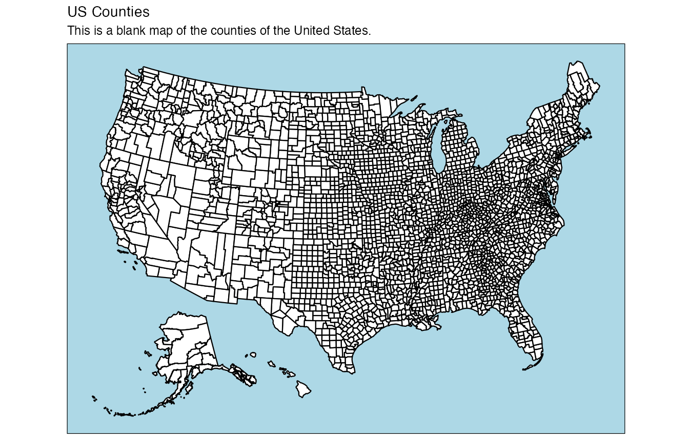
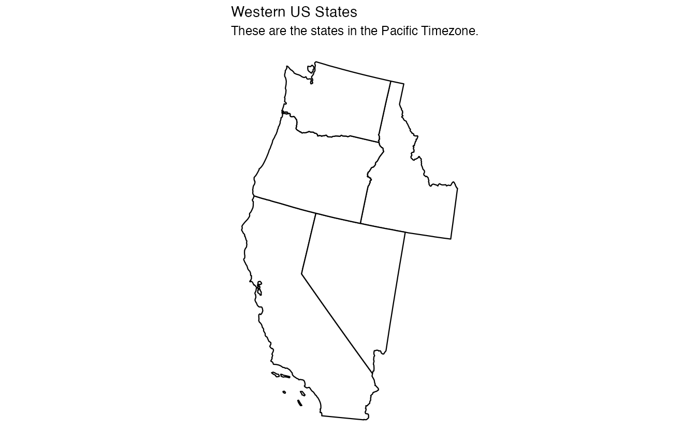
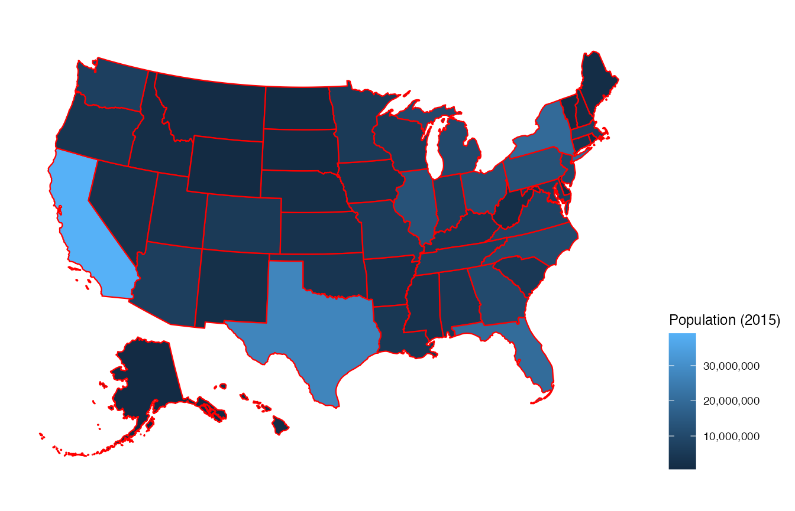
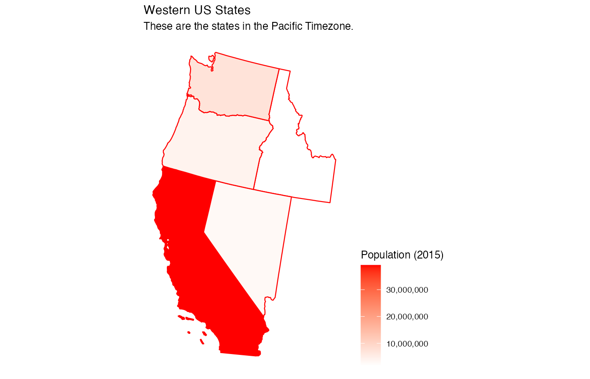
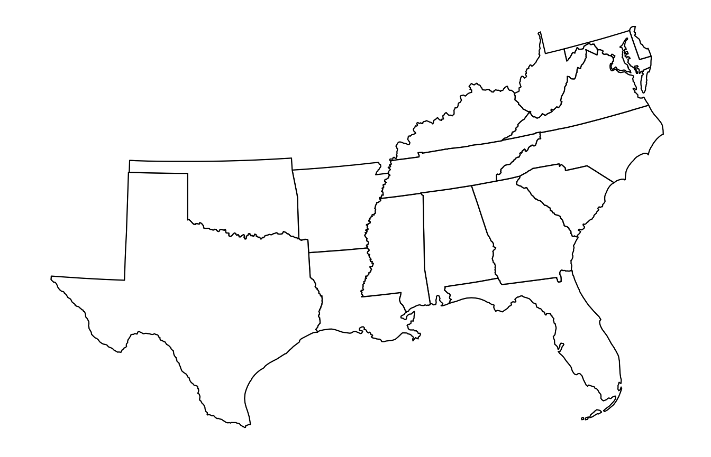
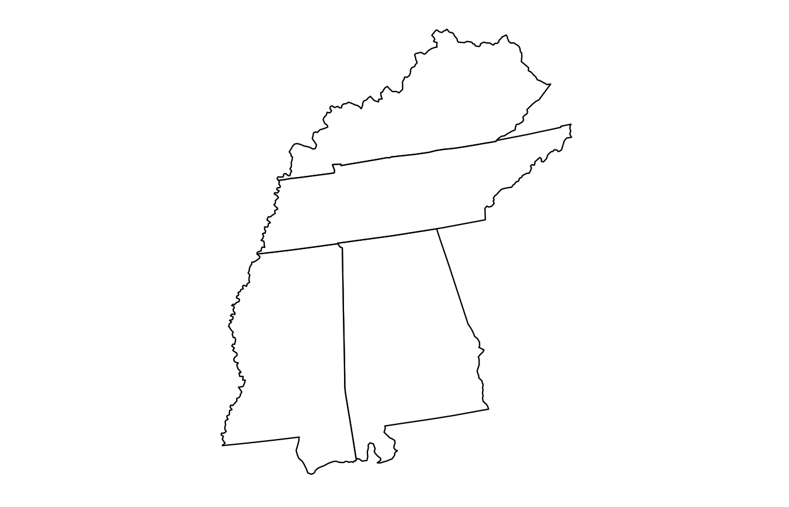
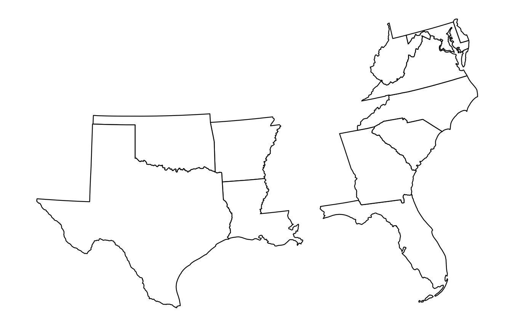
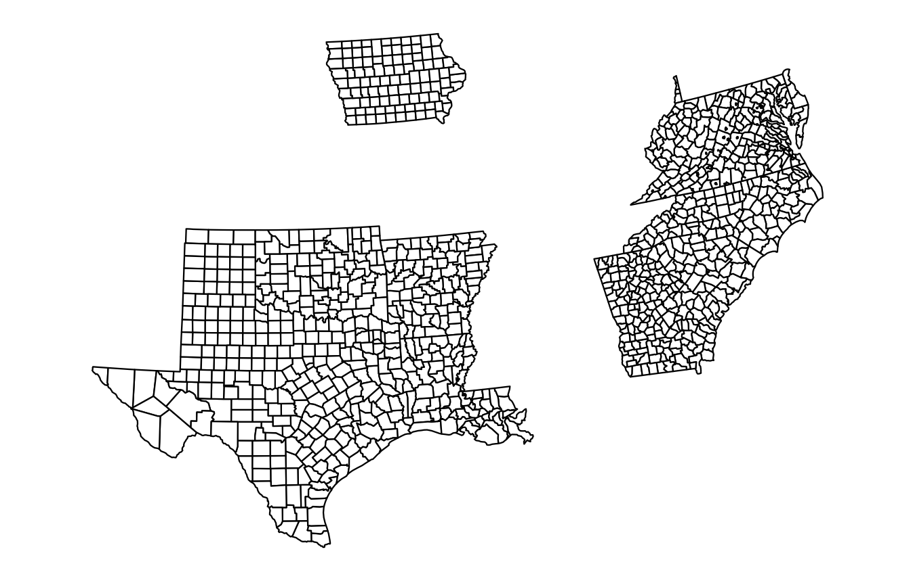
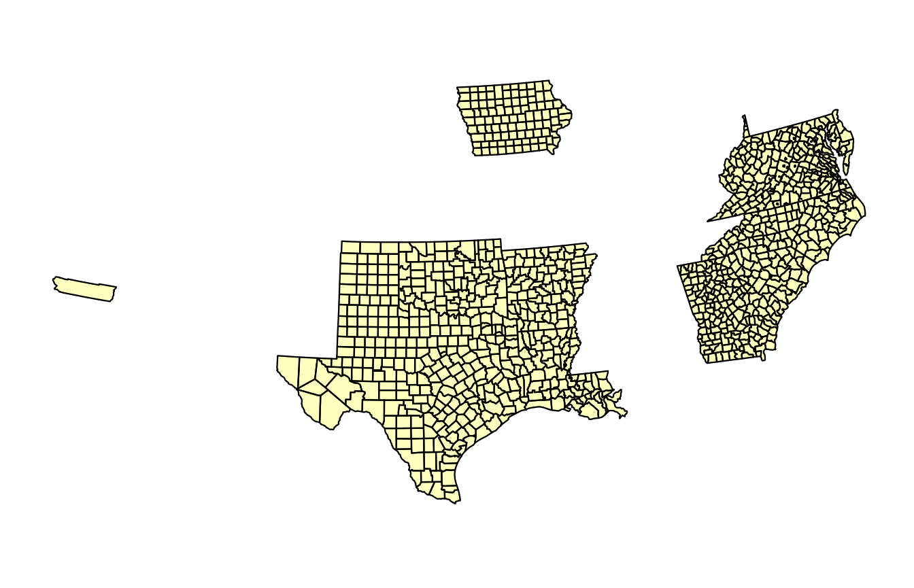

Extending plot_usmap with ggplot2
The nice thing about usmap::plot_usmap is it returns a
ggplot object
object, which means we can add ggplot layers to the plot
right out of the box.
library(usmap)
library(ggplot2)
plot_usmap(regions = "counties") +
labs(title = "US Counties",
subtitle = "This is a blank map of the counties of the United States.") +
theme(panel.background = element_rect(color = "black", fill = "lightblue"))
Plot only certain states
library(usmap)
library(ggplot2)
plot_usmap(include = c("CA", "ID", "NV", "OR", "WA")) +
labs(title = "Western US States",
subtitle = "These are the states in the Pacific Timezone.")
Add some data to the map
library(usmap)
library(ggplot2)
plot_usmap(data = statepop, values = "pop_2015", color = "red") +
scale_fill_continuous(name = "Population (2015)", label = scales::comma) +
theme(legend.position = "right")
Notice the comprehensive expandability that can be applied to the map
using ggplot2 layers. For example, we might want to use a
different color scheme.
Change fill color scale
library(usmap)
library(ggplot2)
plot_usmap(data = statepop, values = "pop_2015", color = "red") +
scale_fill_continuous(
low = "white", high = "red", name = "Population (2015)", label = scales::comma
) + theme(legend.position = "right")
The data-filled map can also be filtered to show certain regions only, like the western states shown above.
Show data in certain states
library(usmap)
library(ggplot2)
plot_usmap(
data = statepop, values = "pop_2015", include = c("CA", "ID", "NV", "OR", "WA"), color = "red"
) +
scale_fill_continuous(
low = "white", high = "red", name = "Population (2015)", label = scales::comma
) +
labs(title = "Western US States", subtitle = "These are the states in the Pacific Timezone.") +
theme(legend.position = "right")
Required Data Format
The data passed to the data parameter in
plot_usmap() must be a data frame with at least two
columns. One of the columns must be named "fips" or
"state" and contain either the FIPS code, the state
abbreviation, or the state name (for county maps only the FIPS code is
supported). The second column must be the values to be plotted for each
region. The default name of the values column is "values".
If a different name is used in the data frame, the name can be specified
in the values parameter of plot_usmap. Any
extra columns in the data frame will be ignored.
FIPS column with default values column
df <- data.frame(
fips = c("02", "01", "05", "04"),
values = c(14, 18, 19, 8)
)
plot_usmap(data = df)FIPS column with custom values column
Name of values column must be specified in values
parameter if it is not "values".
df <- data.frame(
fips = c("02", "01", "05", "04"),
population = c(14, 18, 19, 8)
)
plot_usmap(data = df, values = "population")States
Abbreviations and full names can be mixed if desired.
df <- data.frame(
state = c("AL", "Alaska", "AR", "AZ"),
values = c(14, 18, 19, 8)
)
plot_usmap(data = df)Counties
County names are not supported in plot_usmap data
frames. Use fips instead.
df <- data.frame(
fips = c("10001", "10003", "10005"),
values = c(93, 98, 41)
)
plot_usmap(data = df)Built-in Regions
usmap provides some built-in regions based on the US
Census Bureau Regions and Divisions. These can be used in place of
the include/exclude parameters when using
us_map or plot_usmap and start with a
. (dot):
usmap::plot_usmap(include = .south_region)
usmap::plot_usmap(include = .east_south_central)
usmap::plot_usmap(include = .south_region, exclude = .east_south_central)
This also works with county maps. The regions can also be combined
with actual state or FIPS values within the
include/exclude parameters:
usmap::plot_usmap("counties",
include = c(.south_region, "IA"),
exclude = c(.east_south_central, "12")) # 12 = FL
You can even include or exclude individual counties (county-level inclusions/exclusions can only be done via their FIPS codes due to duplicate county names across states; for example eight different states have an “Orange County”):
usmap::plot_usmap("counties", fill = "yellow", alpha = 0.25,
# 06065 = Riverside County, CA
include = c(.south_region, "IA", "06065"),
# 12 = FL, 48141 = El Paso County, TX
exclude = c(.east_south_central, "12", "48141"))
These parameters therefore allow for the possibility of some complex compositions of states and counties, to create the exact map that is desired.
Supported US Census Regions and Divisions
The following divisions are supported:
.new_england
#> [1] "CT" "MA" "ME" "NH" "RI" "VT"
.mid_atlantic
#> [1] "NJ" "NY" "PA"
.east_north_central
#> [1] "IL" "IN" "MI" "OH" "WI"
.west_north_central
#> [1] "IA" "KS" "MN" "MO" "NE" "ND" "SD"
.south_atlantic
#> [1] "DC" "DE" "FL" "GA" "MD" "NC" "SC" "VA" "WV"
.east_south_central
#> [1] "AL" "KY" "MS" "TN"
.west_south_central
#> [1] "AR" "LA" "OK" "TX"
.mountain
#> [1] "AZ" "CO" "ID" "MT" "NV" "NM" "UT" "WY"
.pacific
#> [1] "AK" "CA" "HI" "OR" "WA"Regions are composed of multiple divisions, and the following are supported:
.northeast_region # c(.new_england, .mid_atlantic)
#> [1] "CT" "MA" "ME" "NH" "RI" "VT" "NJ" "NY" "PA"
.north_central_region # c(.east_north_central, .west_north_central)
#> [1] "IL" "IN" "MI" "OH" "WI" "IA" "KS" "MN" "MO" "NE" "ND" "SD"
.midwest_region # .north_central_region (renamed in June 1984)
#> [1] "IL" "IN" "MI" "OH" "WI" "IA" "KS" "MN" "MO" "NE" "ND" "SD"
.south_region # c(.south_atlantic, .east_south_central, .west_south_central)
#> [1] "DC" "DE" "FL" "GA" "MD" "NC" "SC" "VA" "WV" "AL" "KY" "MS" "TN" "AR" "LA"
#> [16] "OK" "TX"
.west_region # c(.mountain, .pacific)
#> [1] "AZ" "CO" "ID" "MT" "NV" "NM" "UT" "WY" "AK" "CA" "HI" "OR" "WA"Raw map data
The raw US map data for counties or states can be obtained for further manipulation (and joining with data).
str(usmap::us_map())
#> 'data.frame': 13663 obs. of 9 variables:
#> $ x : num 1091779 1091268 1091140 1090940 1090913 ...
#> $ y : num -1380695 -1376372 -1362998 -1343517 -1341006 ...
#> $ order: int 1 2 3 4 5 6 7 8 9 10 ...
#> $ hole : logi FALSE FALSE FALSE FALSE FALSE FALSE ...
#> $ piece: int 1 1 1 1 1 1 1 1 1 1 ...
#> $ group: chr "01.1" "01.1" "01.1" "01.1" ...
#> $ fips : chr "01" "01" "01" "01" ...
#> $ abbr : chr "AL" "AL" "AL" "AL" ...
#> $ full : chr "Alabama" "Alabama" "Alabama" "Alabama" ...
str(usmap::us_map(regions = "counties"))
#> 'data.frame': 55211 obs. of 10 variables:
#> $ x : num 1225889 1244873 1244129 1272010 1276797 ...
#> $ y : num -1275020 -1272331 -1267515 -1262889 -1295514 ...
#> $ order : int 1 2 3 4 5 6 7 8 9 10 ...
#> $ hole : logi FALSE FALSE FALSE FALSE FALSE FALSE ...
#> $ piece : int 1 1 1 1 1 1 1 1 1 1 ...
#> $ group : chr "01001.1" "01001.1" "01001.1" "01001.1" ...
#> $ fips : chr "01001" "01001" "01001" "01001" ...
#> $ abbr : chr "AL" "AL" "AL" "AL" ...
#> $ full : chr "Alabama" "Alabama" "Alabama" "Alabama" ...
#> $ county: chr "Autauga County" "Autauga County" "Autauga County" "Autauga County" ...You can also include only certain states and counties just like in
plot_usmap. In fact, the regions and
include parameters of plot_usmap are derived
directly from their usage in us_map.